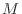
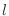
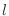

Next: Variable gap penalty Up: Dynamic programming for sequence Previous: Dynamic programming for sequence Contents Index
The residue by residue scores can be used directly in the sequence alignment algorithm of Needleman & Wunsch [Needleman & Wunsch, 1970] to obtain the comparison of two protein sequences or structures. The only difference between the two types of comparison is in the type of the comparison matrix. In the case of sequence, the amino acid substitution matrix is used. In the case of 3D structure, the Euclidean distance (or some function of it) between two equivalent atoms in the current optimal superposition is used [Šali & Blundell, 1990].
The problem of the optimal alignment of two sequences as addressed by
the algorithm of Needleman & Wunsch is as follows. We are given two
sequences of elements and an  times  score matrix where
and
score matrix where
and  are the numbers of elements in the first and second
sequence. The scoring matrix is composed of scores describing
differences between elements
are the numbers of elements in the first and second
sequence. The scoring matrix is composed of scores describing
differences between elements  and
and  from the first and second
sequence respectively. The goal is to obtain an optimal set of
equivalences that match elements of the first sequence to the elements
of the second sequence. The equivalence assignments are subject to the
following “progression rule”: for elements
from the first and second
sequence respectively. The goal is to obtain an optimal set of
equivalences that match elements of the first sequence to the elements
of the second sequence. The equivalence assignments are subject to the
following “progression rule”: for elements  and
and  from the
first sequence and elements
from the
first sequence and elements  and  from the second sequence, if
element
and  from the second sequence, if
element  is equivalenced to element
is equivalenced to element  , if element
, if element  is
equivalenced to element and if
is
equivalenced to element and if  is greater than
is greater than  ,
must also be greater than
,
must also be greater than  . The optimal set of equivalences is the
one with the smallest alignment score. The alignment score is a sum of
scores corresponding to matched elements, also increased for
occurrences of non-equivalenced elements (ie gaps). For a detailed
discussion of this and related problems see [Sankoff & Kruskal, 1983].
. The optimal set of equivalences is the
one with the smallest alignment score. The alignment score is a sum of
scores corresponding to matched elements, also increased for
occurrences of non-equivalenced elements (ie gaps). For a detailed
discussion of this and related problems see [Sankoff & Kruskal, 1983].
We summarize the dynamic programming formulae used by MODELLER to obtain the optimal alignment since they differ slightly from those already published [Sellers, 1974,Gotoh, 1982]. The recursive dynamic programming formulae that give a matrix are:
The arrays , and are initialized as follows:
The minimal score is obtained from